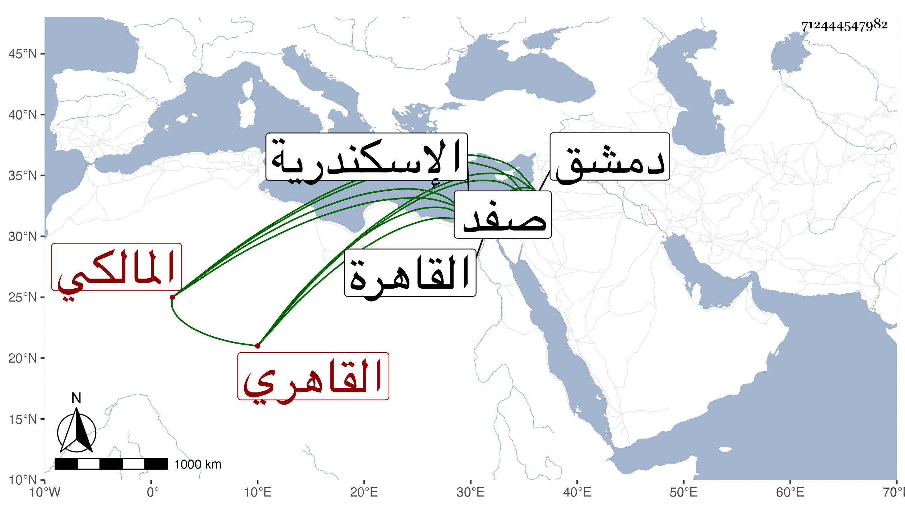

0902Sakhawi.DawLamic.ITO20230111-ara1.EIS1600.712444547982
Biography ID: 712444547982
246
محمد بن محمد بن عامر الشمس القاهري المالكي ويعرف بابن عامر . ولد في ربيع الأول سنة خمس وتسعين وسبعمائة وحفظ القرآن وكتبا واشتغل في الفقه وغيره ومن شيوخه البساطي والشهاب بن تقي وكان يذكر أنه سمع على التقي الدجوي وناب في القضاء مدة عن البساطي وامتنع البدر بن التنسي من استنابته ، ثم ولي قضاء دمشق عوضا عن الأمين سالم في أواخر شعبان سنة خمسين ثم عزل في رمضان من التي تليها بالشهاب التلمساني فلما قام سرور المغربي على قاضي اسكندرية الجمال بن الدماميني حسن للظاهر عزله والاستقرار بهذا عوضه ففعل ثم لم يلبث ان اعيد الحمال ورجع ابن عامر إلى محل اقامته بالقاهرة معزولا ، وكل ذلك في سنة اربع واربعين فتصدى للأفتاء واستقر في تدريس الفقه بالشيخونية بعد الزين عبادة عمل اجلاسا ثم انتزع منه ليحيى العجيسي ورام البدر المشار إليه تعويضه عنه بتدريس الجمالية وظيفته فما تم فتألم ابن عامر ولزم بيته إلى أن عين لقضاء صفد فتوجه إليها وباشره حتى مات في أوائل جمادى الآخرة سنة ثمان وخمسين ، وقد لقيته غير مرة وقصدته في بعض النوازل وسمعت كلامه وكان يستحضر فروع مذهبه ولكن لم يكن من المحققين بل ولا من المتفننين وربما نسب للتعاطي على الافتاء ، وقد كتب على مختصرالشيخ خليل شرحا سماه التفكيك للرموز والتكليل على مختصر الشيخ خليل لم يكمل وقفت على مجلد منه انتهى فيه إلى الحج وكتب عليه ، ما نصه :
| كل الشروح ليس فيها مثل شرحي المختصر | فيه على تحقيق الحق تدقيق النظر |
| فمن كان ذافهم ولب وبصر | فليلزم قراءته وليتدبره بالفكر |
| فالجهل يزري صاحبه وبه يحتقر | والعلم زين لمن به اتزر |
ورام من ابن عمار فيما بلغني تقريضه فامتنع لكثرة أوهامه ولكن قد كتب عليه شيخنا ما نصه كما قرأته بخطه على المجلد المشار إليه : الحمد لله الفتاح العليم :
| لعمري لقد أوضحت مذهب مالك | بتفكيك رمز لائح للمسامر |
| وجودت ما سطرت منه مهذبا | ومن أين للتجويد مثل ابن عامر |
وكتب تحتهما الحسام بن بريطع الحنفي ما نصه : الحمد لله الوهاب الكبير :
| لقد غدا التكليل أعجوبة | وأصبح التفكيك تحبيرا |
| رصعه درا فتى عامر | فزاده الرحمن تعميرا |
وترجمه بعض المؤرخين بقوله رجل جيد خير عالم فاضل حسن السيرة سمع الحديث وأجاز له خلق .
